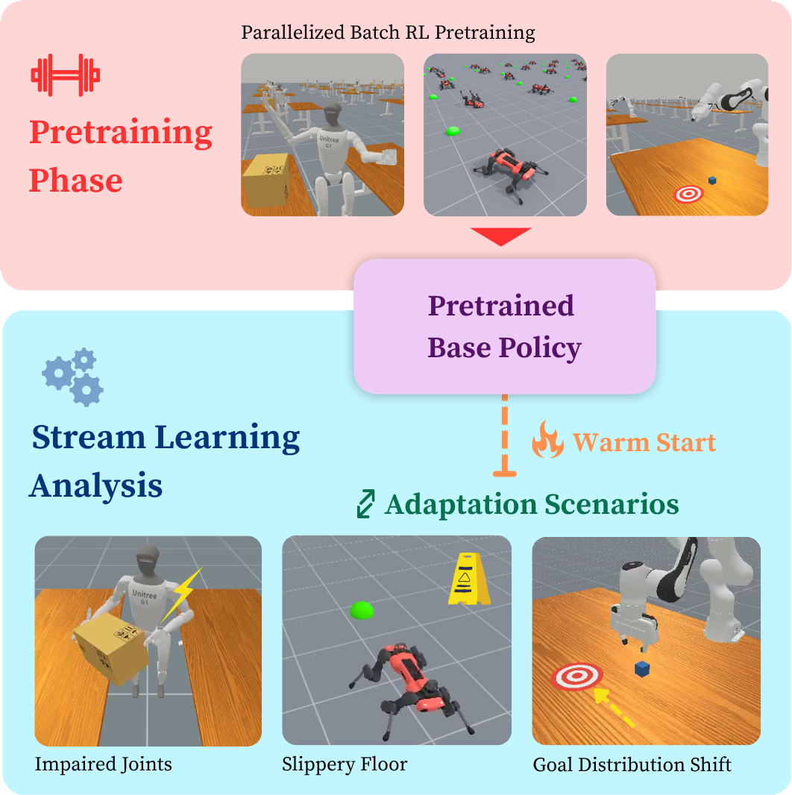
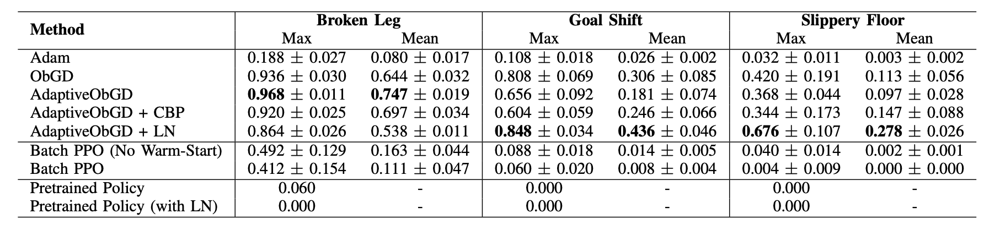
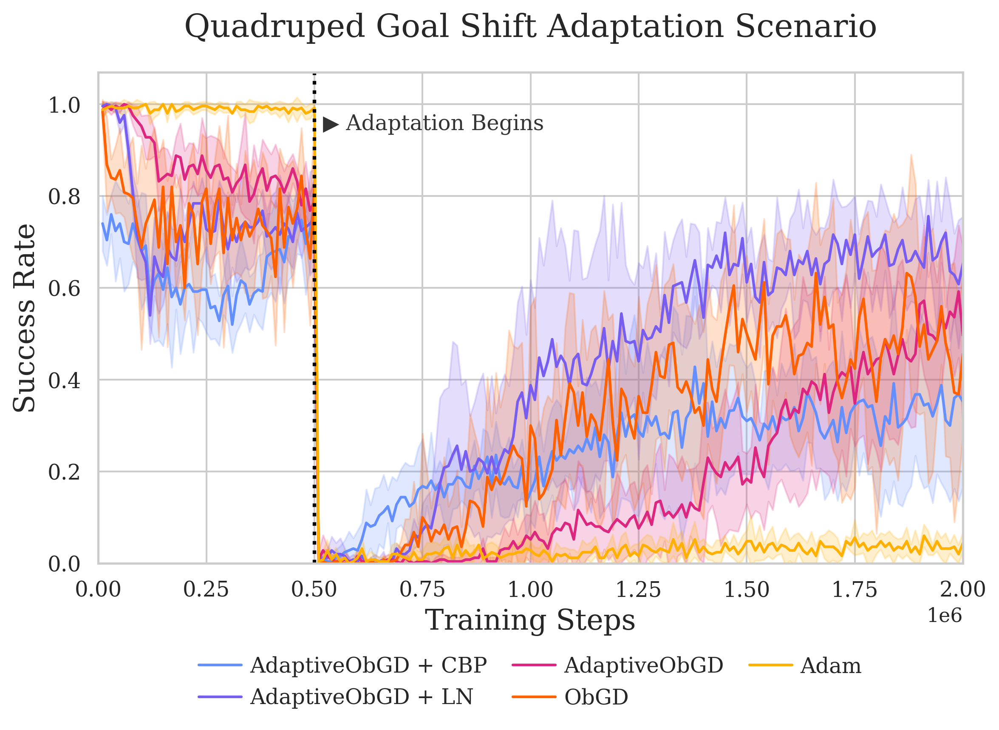
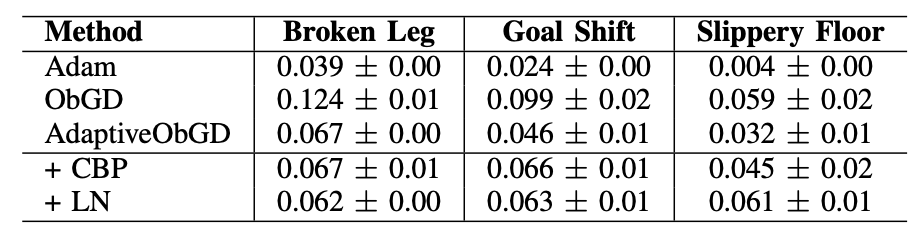
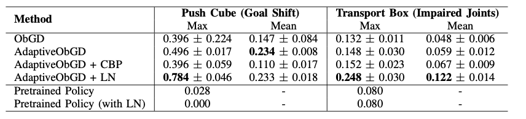
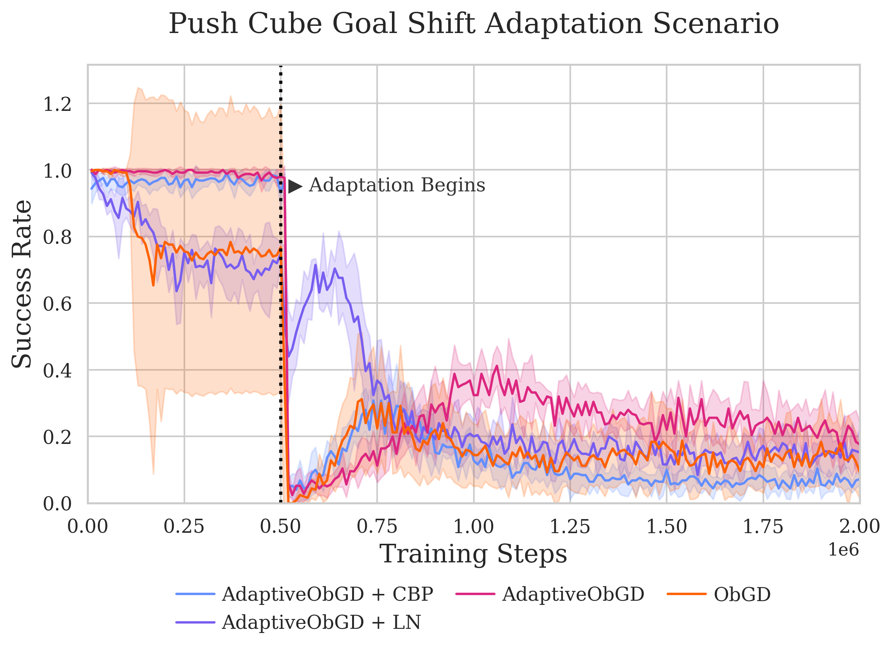

Over the course of a lifetime, robots may encounter novel scenarios unaccounted for in its original training that result in performance degradation. One common approach to mitigating this issue is to further grow the offline training dataset in hopes of producing a policy robust to these changes. In contrast, biological learning occurs moment-to-moment via a stream of experience, unlike the predominantly batch-based and offline nature of deep learning. Although recent works show the feasibility of stream-based deep reinforcement learning, where updates use only the latest experience, none have shown it to be a viable continual learning framework for adapting robotic policies to unseen changes.
In this paper, we present the first analysis of streaming deep reinforcement learning for adaptive continual learning in robotics. In particular, we show that, following an initial pretraining phase, streaming deep RL can enable a robot to successfully adapt to unforeseen changes to itself, its environment, or goals. Our primary experiments within quadruped locomotion demonstrate that a deep neural network robotic policy with certain optimizers and plasticity loss mitigation techniques can successfully leverage domain task knowledge from its pretraining to quickly adapt online to diverse changes via stream learning, outperforming batch-based on-policy methods and improving task success rates by up to 90% over the pretrained policy. Furthermore, we perform additional evaluations on robotic manipulation tasks to determine if our previous observations extend to different robotic morphologies and scenarios. Our results show that the successes observed in quadruped locomotion can be partially realized in manipulation with stability and performance limitations. We conclude with a discussion on the limitations of our work and its implications for the future of continual robot learning.
TL;DR: We present an analysis of streaming deep reinforcement learning for continual robotic adaptation, focusing on how optimizers and plasticity loss mitigation techniques affect adaptation performance.
In this analysis, we are generally assessing a robot's ability to adapt to new scenarios. In particular, we consider settings where the transition dynamics and reward function of the underlying Markov Decision Process (MDP) can change at any time.
Our goal is to investigate to what extent a pretrained policy can adapt smoothly and efficiently across these sharp changes.

Our primary analysis is a series of experiments conducted within quadruped locomotion that 1) demonstrate the potential capabilities of streaming deep RL for enabling continual robotic adaptation and 2) analyze how the choice of certain optimizers or plasticity loss mitigation techniques can affect adaptation performance.
We developed 3 adaptation scenarios that test the robot’s ability to adapt to changes to its embodiment, environment, and goals.
Broken Leg: We zero-mask 3 values of the action space to simulate the back left leg of the robot being stuck.
Slippery Floor: We change the static and dynamic friction coefficients of the ground in the environment from 0.3 to -1.8.
Goal Shift: We offset the distribution of goal positions from the original centered at (0,0), to (0,3.0).



Takeaway: Optimizer choice significantly impacts adaptation performance in streaming deep RL. Plasticity loss mitigation techniques can be useful, but can also be detrimental due to the plasticity-stability tradeoff. With careful design choices for the optimizer and plasticity-preserving components, streaming deep RL algorithms are adept at adapting pretrained policies to new scenarios, even when compared to common batch-based deep RL approaches.
We conduct a series of experiments in robotic manipulation environments to see whether our previous observations about the performance of streaming deep RL for adaptation in quadruped locomotion hold with a different task space and robotic morphology.
Our subsequent analyses are performed on two object manipulation tasks with different robot embodiments.
Push Cube - Goal Shift: Although the cubes are still spawned within the same range, we consistently offset the goal position by -0.15 on the y-axis.
Transport Box - Impaired Joints: We make certain shoulder, hand, and finger joints stuck via zero-masking and stiff by scaling their values in the action vector.


Takeaway: Streaming deep RL methods appear capable of enabling neural networks to be sufficiently malleable to adapt an agent's behavior, but can still face significant performance decline and instability over time on manipulation tasks that may require greater precision. Furthermore, on control tasks with greater complexity, there is still a limited capacity for performance recovery and behavioral adaptation from noisy single-sample stream updates.
In this paper, we presented the first analysis of streaming deep reinforcement learning for adaptive continual learning in robotics. Our analysis was centered on using streaming deep RL to adapt pretrained policies online to abrupt changes to the robot's embodiment, environment, and goals.
Our Main Takeaways:
⚡️ State-of-the-art streaming deep RL algorithms show sparks of effectiveness on certain robotic locomotion and manipulation tasks.
🧠 Design choices that manage the plasticity-stability tradeoff in neural networks are critical for performant adaptive stream learning.
🏗️ Despite these promising results, realizing the full potential of stream learning in robotics remains a major open challenge.